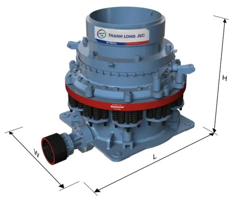
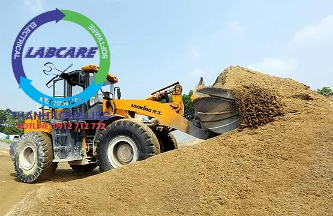
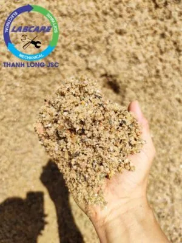

Cát dùng trong xây dựng có rất nhiều loại như cát vàng, cát xây tô, cát bê tông…. Mỗi loại đều có những tính năng và mục đích sử dụng khác nhau. Có nguyên vật liệu mới được thay thế cát tự nhiên, cát nhân tạo hay còn gọi là cát công nghiệp.
Phân biệt cát bê tông và cát xây dựng, cát nhân tạo
Là loai vật liệu được sử dụng nhiều nhất trong xây dựng, dù trong bất cứ công trình nào, lớn hay nhỏ đều không thể thiếu loại vật liệu này. Mỗi loại cát trong xây dựng (cát bê tông, cát lấp, cát xây hay cát trộn vữa,…), đều có những đặc tính vật lí khác nhau. Những người có kinh nghiệm trong xây dựng, có thể phân biệt được chúng bằng mắt thường. Thông qua các tính chất bên ngoài của chúng như:. Màu sắc (màu vàng, trắng, nâu nhạt,…), độ mịn của cát, hình dạng hạt (tròn, dẹt,…), độ bám dính..

Những loại cát thường dùng trong xây dựng, vị trí và cơ hội cho cát nhân tạo
Cát vàng: đây là loại cát phổ biến được dùng để đổ bê tông tươi. Đặc điểm của loại cát này là chúng có màu vàng đặc trưng, sử dụng loại cát này làm cho bê tông nhanh cứng. Nếu muốn bê tông đạt chất lượng tốt nhất cần sàn cát sạch sẽ, và chia tỉ lệ thích hợp trước khi trộn.
Đôi khi cát vàng còn được dùng để chát tường, nhưng nhược điểm của loại cát này là làm cho tường không được láng mịn. Nên nó ít được sử dụng vào mục đích này.
Cát đen: hạt cát có màu sẫm, gần giống với màu đen. Khác với cát vàng, loại cát này có hạt nhỏ và khá mịn không lẫn tạp chất. Giá thành rẻ hơn nhiều so với cát vàng, nên được sử dụng rộng rãi trong xây cất các biệt thự, tòa cao ốc hay các công trình dân dụng.
Cát lấp: đây cũng là loại cát đen nhưng kích cỡ hạt của chúng không giống nhau, cát này thường có màu xám và rất hay lẫn tạp chất nên chất lượng không bằng hai loại nói trên. Nó thường được sử dụng làm phần nền, móng nhà. Tuy nhiên, giá thành cát lấp khá rẻ, rẻ hơn nhiều so với cát vàng và cát đen.

Đặc điểm cát bê tông – phân biệt cát bê tông và cát xây. Có khác nhiều so với cát nhân tạo hay không?
Khác với những loại cát xây dựng khác, cát bê tông cũng có những đặc tính và thành phần riêng, do đó nó cũng có một vai trò riêng nhất định trong xây dựng.
Cát cho bê tông (cát vàng to hạt): Mô đun độ lớn từ 2,0 –3,3. Hàm lượng muối gốc sunphát không quá 1% khối lượng. Cát chứa hàm lượng sỏi có đường kính từ 5-10 mm và không vượt quá 5% khối lượng. Hàm lượng mica có trong cát không được lớn hơn 1% theo khối lượng. Cỡ hạt không nhỏ hơn 0,25 mm, màu vàng, sắc cạnh và sạch, có khối lượng thể tích khoảng 1400 kg/m3.
Yêu cầu kĩ thuật cát đổ bê tông, và việc sử dụng cát nhân tạo trong cấp phối bê tông tươi và bê tông li tâm tại Việt Nam
Chất lượng của cát chủ yếu phụ thuộc vào thành phần cấu tạo hạt và hàm lượng các tạp chất có trong cát, kích thước hạt từ 0,14 – 5 mm là đạt yêu cầu.
Cát vàng dùng để trộn bê tông cần phải là loại cát sạch, không lẫn tạp chất, hạt cát đều, hình tròn. Trước khi chia tỉ lệ, cát cần được rửa sạch lại một lần nữa và chuyển đến bộ phận kĩ thuật cân điện tử.
Bãi chứa cát cần khô ráo, cát đổ theo đống ở một khu vực riêng. Không có rác, không để lẫn với các loại vật liệu khác hay tạp chất khác.
Cát tốt nhất để đổ bê tông là cát nhân tạo . Trải qua quá trình nghiền + rửa, loại bỏ hoàn toàn tạp chất.
Còn cát khai thác được được các sông lớn, suối,… vì cát ở đây thường không sạch, lẫn tạp chất. Ở một số vùng xa, người dân thường dùng cát khai thác ven biển để đổ bê tông. Tuy nhiên, các nhà chuyên môn không khuyến khích việc sử dụng cát nhiễm mặn. Hoặc cát ven biển để đổ bê tông, vì loại cát này thường lẫn tạp chất và gốc sunfat gây ảnh hưởng đến độ cứng của bê tông.
Loại cát mịn và chứa nhiều tạp chất như bụi bùn, sét sẽ tạo nên một lớp màng mỏng trên bề mặt bê tông. Điều này làm giảm sự kết dính, sẽ làm giảm độ cứng của bê tông.
Muốn bê tông đạt được chất lượng tốt nhất cần chọn loại cát có các đặc tính phù hợp. Với tình hình khan hiếm của cát tự nhiên, cát nhân tạo đang dần nổi lên như 1 xu thế tất yếu của tương lai.
Tuy nhiên điều đáng lưu ý hiện nay các loại máy nghiền cát của Hàn Quốc, Trung quốc mà Việt Nam. Đang sử dụng lại tạo ra lượng hạt bụi quá nhiều (hạt 0-2mm), do sử dụng công nghệ đá và kim loại. Hoặc do cấu tạo của buồng nghiền chưa phù hợp, dẫn đến làm thất thoát cát đầu ra khi rửa cát.
Công nghệ tiên tiến là dùng máy nghiền, hoạt động dựa trên nguyên lí đá va đá. Tạo ra hạt cát đúng tỷ lệ modul hạt mong muốn.


Các dự án lớn đã lắp đặt dây chuyền cát nhân tạo tại Việt Nam:
Khánh thành dây chuyền nghiền cát nhân tạo phục vụ cho bê tông
GIAO HÀNG MÁY NGHIỀN CÁT NHÂN TẠO
Cận cảnh máy nghiền đá hoạt động tại mỏ đá Việt Nam
Lắp đặt trạm nghiền đá và cát xây dựng được nhập khẩu hoàn toàn
Khủng khiếp máy nghiền đá xây dựng lớn nhất Việt Nam
Toàn cảnh dây chuyền nghiền cát nhân tạo tại Việt Nam
Kênh video Youtube:
Page Facebook: Công Nghệ Máy Nghiền Đá
Website: https://thegioimaynghienda.com https://labcare.com.vn/
Zalo, hotline: 0912 712 772